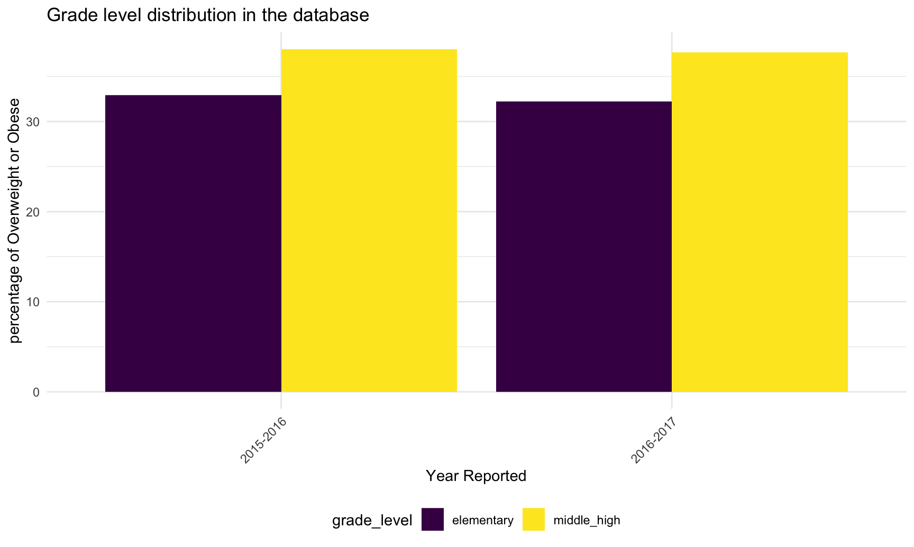

Raw Regression
library(tidyverse)## ── Attaching packages ───────────────────────────────────────────────────────────────────────────── tidyverse 1.3.0 ──## ✓ ggplot2 3.3.2 ✓ purrr 0.3.4
## ✓ tibble 3.0.3 ✓ dplyr 1.0.2
## ✓ tidyr 1.1.2 ✓ stringr 1.4.0
## ✓ readr 1.3.1 ✓ forcats 0.5.0## ── Conflicts ──────────────────────────────────────────────────────────────────────────────── tidyverse_conflicts() ──
## x dplyr::filter() masks stats::filter()
## x dplyr::lag() masks stats::lag()library(readxl)
library(plotly)##
## Attaching package: 'plotly'## The following object is masked from 'package:ggplot2':
##
## last_plot## The following object is masked from 'package:stats':
##
## filter## The following object is masked from 'package:graphics':
##
## layoutknitr::opts_chunk$set(
fig.width = 9,
fig.asp = .6,
out.width = "90%")
theme_set(theme_minimal() + theme(legend.position = "bottom"))
options(
ggplot2.continuous.colour = "viridis",
ggplot2.continuous.fill = "viridis"
)
scale_colour_discrete = scale_color_viridis_d
scale_fill_discrete = scale_fill_viridis_dWe planned to use linear regression model to analysis the association between obesity rate and other variables like sex, grade level, economic status, etc. The resulting model can give us a sense of which factor influences obesity rate the most.
Basic variables that we are interested in:
Sex Grade Level Economic Status Food Access Ability
Exploratory data analysis
Sex
The graph below shows that more male students are in the overweight or obese category each year than female students.It seems like the percentage for male in the overweight or obese category slightly decreases and female slightly increases over years.
original =
tibble(
read.csv("./dataset/Student_Weight_Status_Category_Reporting_Results__Beginning_2010.csv")
) %>%
janitor::clean_names()
sex_df =
original %>%
mutate(
percent_healthy_weight = percent_healthy_weight * 100
) %>% ## when importing data the percent healthy weight was distorted so i timed 100
select(county, region, year_reported, percent_overweight_or_obese, grade_level, sex) %>%
filter(sex == "MALE" | sex == "FEMALE") %>%
filter(grade_level == "DISTRICT TOTAL") %>%
filter(county == "STATEWIDE (EXCLUDING NYC)") %>%
select(year_reported, percent_overweight_or_obese, sex)
sex_count =
sex_df %>%
group_by(year_reported)
sex_count %>%
ggplot(aes(x = as.factor(year_reported), y = percent_overweight_or_obese, fill = sex)) +
geom_bar(stat='identity', position = "dodge") +
labs(title = "Gender distribution in the database",
x = "Year Reported",
y = "percentage of Overweight or Obese") +
theme(axis.text.x = element_text(angle = 45, hjust = 1))
Grade Level
The graph below shows that students in middle/high school grade level tend to have higher percentage than the elementary students in overweight or obese category each year. There also seems to be an increase in the overweight or obese percentage for the middle or high school students while a decrease for the elementary students over years.
grade_df =
original %>%
select(county, region, year_reported, percent_overweight_or_obese, grade_level, sex) %>%
filter(sex %in% "ALL") %>%
filter(grade_level %in% c("ELEMENTARY", "MIDDLE/HIGH")) %>%
filter(county == "STATEWIDE (EXCLUDING NYC)") %>%
select(year_reported, percent_overweight_or_obese, grade_level)
grade_count =
grade_df %>%
group_by(year_reported)
grade_count %>%
ggplot(aes(x = as.factor(year_reported), y = percent_overweight_or_obese, fill = grade_level)) +
geom_bar(stat='identity', position = "dodge") +
labs(title = "Grade level distribution in the database",
x = "Year Reported",
y = "percentage of Overweight or Obese") +
theme(axis.text.x = element_text(angle = 45, hjust = 1))
Economic Status
## `summarise()` ungrouping output (override with `.groups` argument)# Further original data cleaning for graph of poverty and obesity
obesity_geo_df =
weight_df %>%
filter(sex %in% "ALL") %>%
filter(!county == "STATEWIDE (EXCLUDING NYC)") %>%
filter(grade_level %in% "DISTRICT TOTAL") %>%
filter(!county == "N/A") %>%
select(county, percent_overweight_or_obese, latitude, longitude)
# Import tidy and join the median income
income = read_xlsx("./dataset/median_income.xlsx") %>%
janitor::clean_names() %>%
rename(county = region_county) %>%
mutate(median_income = median_income*0.001, # convert the income unit from $100,000 to 100k format, large values will reduce model's efficiency
county = toupper(county))
income_geo_df = left_join(coordinates, income, by = "county") # combine income data to the main Food Access Ability
food_insecurity = read_xlsx("./dataset/food_insecurity.xlsx") %>%
janitor::clean_names() %>%
rename(county = region_county) %>%
rename(food_insecurity_p = percentage) %>%
mutate(county = toupper(county))
#linear_df3 = left_join(linear_df2, food_insecurity, by = "county") # combine food insecurity data